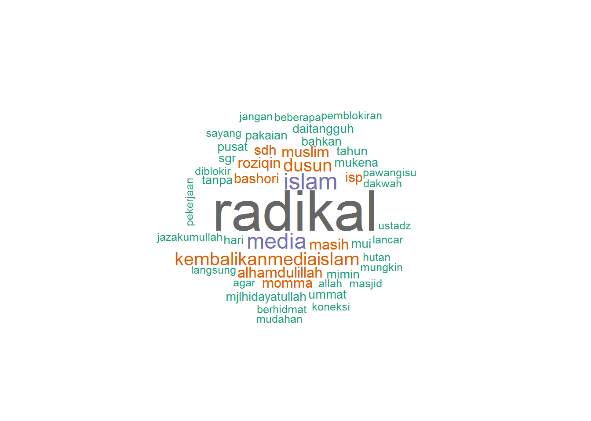
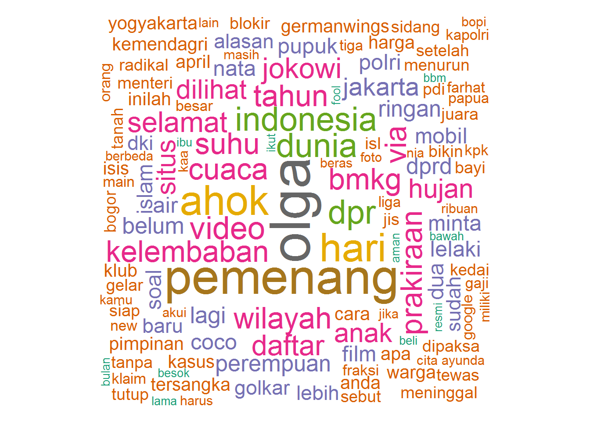
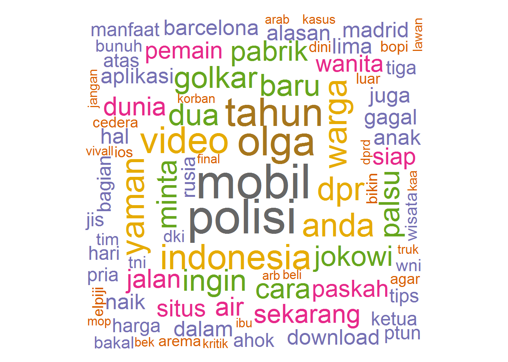
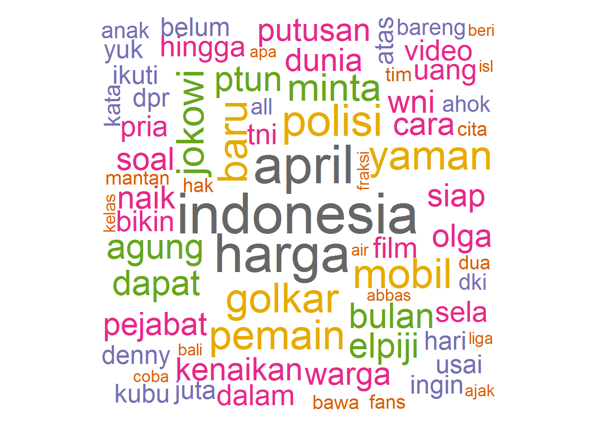
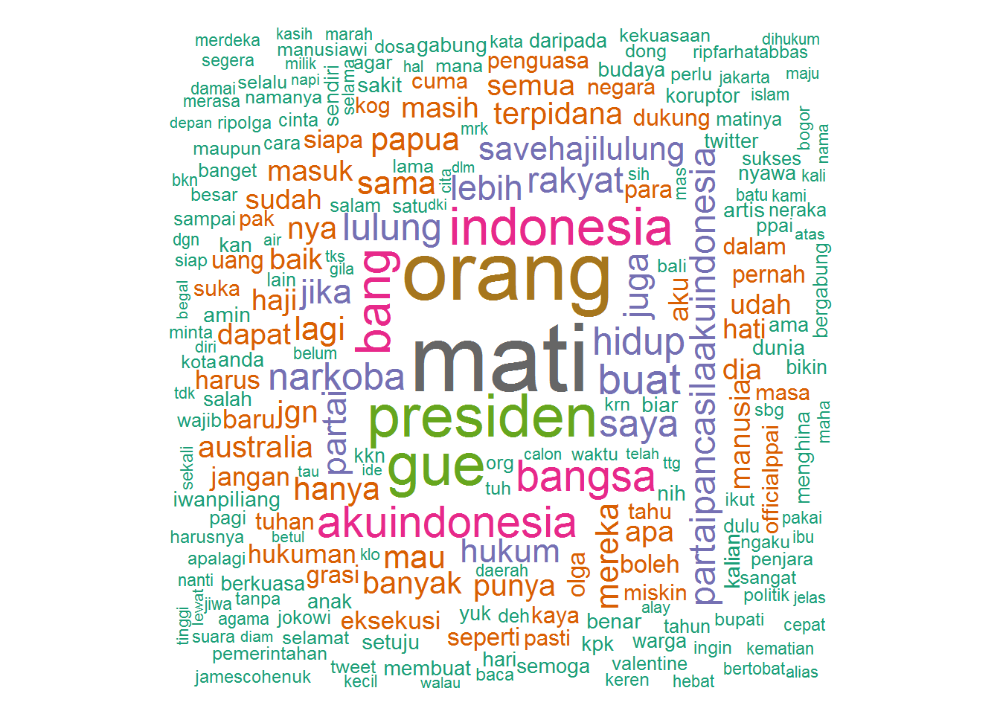

Word Clouds of Indonesian Media Outlet Twitter User Timelines
Hendy Irawan
02/04/2015
R Programming Language Tutorial Videos on YouTube
Installing Packages: libcurl4-openssl-dev, TwitteR, httpuv, tm, wordcloud, RColorBrewer
Install Ubuntu package libcurl4-openssl-dev required by RCurl R package:
sudo aptitude install libcurl4-openssl-devInstall the R packages:
install.packages(c('TwitteR', 'httpuv', 'tm', 'wordcloud'))Setup Twitter OAuth
Get your Twitter app OAuth consumer credentials, then:
library(twitter)
setup_twitter_oauth(consumer_key, consumer_secret)Grab data
tl_hidcom <- userTimeline('hidcom', n=1000, includeRts = TRUE)View it as data frame, make sure to convert to UTF-8 to avoid encoding issues later:
tl_hidcom.df <- twListToDF(tl_hidcom)
tl_hidcom.df$text <- iconv(tl_hidcom.df$text, to='utf-8')
View(tl_hidcom.df)Get summary:
tl_hidcom.df <- read.csv('tl_hidcom_2015-04-02.csv')
summary(tl_hidcom.df)## X
## Min. : 1.00
## 1st Qu.:23.75
## Median :46.50
## Mean :46.50
## 3rd Qu.:69.25
## Max. :92.00
##
## text
## 100 rumah dari pemerintah unt program transmigrasi perambah hutan yg sebelumnya nomaden tidak semua berpenghuni | #RADIKAL : 1
## 26 th @mjlhidayatullah & 19 th @hidcom berhidmat pd ummat #KembalikanMediaIslam http://t.co/3CYvcx3AbN : 1
## 26 th @mjlhidayatullah & 19 th @hidcom berhidmat pd ummat #KembalikanMediaIslam http://t.co/fvjwAoBkbI : 1
## 26 th @mjlhidayatullah & 19 th @hidcom berhidmat pd ummat #KembalikanMediaIslam http://t.co/GEGTxxDfvQ : 1
## Adalah Ando, anak muda usia 34 tahun penduduk dusun Momma, pedalaman jauh Mamuju | #Radikal : 1
## ada virus radikalnya :) @kupinang:Kasihanilah org yg panik @emthorif: speedy jogja istimewa jg mash diblokir @hidcom http://t.co/9c0szlAZEb": 1
## (Other) :86
## favorited favoriteCount replyToSN
## Mode :logical Min. : 0.000 andreyferriyan: 1
## FALSE:92 1st Qu.: 0.000 mashurul : 1
## NA's :0 Median : 0.000 pawangisu : 1
## Mean : 1.054 saeful_kafi : 1
## 3rd Qu.: 1.000 NA's :88
## Max. :13.000
##
## created truncated replyToSID
## 2015-03-31 06:41:58: 1 Mode :logical Min. :5.828e+17
## 2015-03-31 06:52:07: 1 FALSE:92 1st Qu.:5.833e+17
## 2015-03-31 08:26:31: 1 NA's :0 Median :5.834e+17
## 2015-03-31 08:30:13: 1 Mean :5.833e+17
## 2015-03-31 09:48:24: 1 3rd Qu.:5.834e+17
## 2015-03-31 13:49:37: 1 Max. :5.834e+17
## (Other) :86 NA's :88
## id replyToUID
## Min. :5.828e+17 Min. :1.555e+08
## 1st Qu.:5.834e+17 1st Qu.:2.200e+08
## Median :5.835e+17 Median :9.450e+08
## Mean :5.834e+17 Mean :9.743e+08
## 3rd Qu.:5.836e+17 3rd Qu.:1.699e+09
## Max. :5.836e+17 Max. :1.852e+09
## NA's :88
## statusSource
## <a href="https://about.twitter.com/products/tweetdeck" rel="nofollow">TweetDeck</a> :23
## <a href="http://twitter.com/download/android" rel="nofollow">Twitter for Android</a>: 7
## <a href="http://twitter.com" rel="nofollow">Twitter Web Client</a> :57
## <a href="http://twitterfeed.com" rel="nofollow">twitterfeed</a> : 5
##
##
##
## screenName retweetCount isRetweet retweeted
## hidcom:92 Min. : 0.000 Mode :logical Mode :logical
## 1st Qu.: 1.000 FALSE:92 FALSE:92
## Median : 2.000 NA's :0 NA's :0
## Mean : 6.087
## 3rd Qu.: 4.000
## Max. :78.000
##
## longitude latitude
## Mode:logical Mode:logical
## NA's:92 NA's:92
##
##
##
##
## Save the data frame to CSV:
write.csv(twListToDF(tl_hidcom), 'tl_hidcom.csv')Prepare Stop Words
stopwords_id = c('ini', 'dengan', 'untuk', 'yang', 'tak', 'tidak', 'gak',
'dari', 'dan', 'atau', 'bisa', 'kita', 'ada', 'itu',
'akan', 'jadi', 'menjadi', 'tetap', 'per', 'bagi', 'saat',
'tapi', 'bukan', 'adalah', 'pula', 'aja', 'saja',
'kalo', 'kalau', 'karena',
'amp' # &
)Make a Corpus
Grab just text column:
head(tl_hidcom.df$text)## [1] Alhamdulillah kasus sdh selesai RT @wawan_83: dapat bc dr teman, ada mts hdy di Bali mau ditutup, betulkah? @hidcom http://t.co/TmtMvlSInc
## [2] Selesai | #RADIKAL
## [3] Mungkin pekerjaan-pekerjaan seperti inilah yang dianggap menakutkan | #RADIKAL
## [4] Termasuk sunyi dari suasana dakwah sampai waktu yang tidak mereka ketahui batasnya | #RADIKAL
## [5] Inilah kesunyian Momma | #Radikal http://t.co/A6Fh46Q3L6
## [6] Rumahnya sedikit agak rapi meski tetap menunjukan kesunyiannya | #RADIKAL
## 92 Levels: 100 rumah dari pemerintah unt program transmigrasi perambah hutan yg sebelumnya nomaden tidak semua berpenghuni | #RADIKAL ...Make a tm Corpus from the data frame VectorSource:
library(tm)## Loading required package: NLPtl_hidcom.corpus <- Corpus(VectorSource(tl_hidcom.df$text))
corpus <- tl_hidcom.corpusMake a TermDocumentMatrix, with desired text preprocessors:
# Remove Twitter shortened links
corpus <- tm_map(corpus, content_transformer(function(x) gsub('http\\S+t.co\\S+', '', x)))
# Make TermDocumentMatrix
tl_hidcom.tdm <- TermDocumentMatrix(corpus,
control = list(stripWhitespace = TRUE, tolower = TRUE,
removeNumbers = TRUE,
removePunctuation = TRUE,
stopwords = c(stopwords_id, 'hidayatullah', 'hidcom') ))Get the matrix from the TermDocumentMatrix:
tl_hidcom.m <- as.matrix(tl_hidcom.tdm)
tl_hidcom.m[1:10, 1:20]## Docs
## Terms 1 2 3 4 5 6 7 8 9 10 11 12 13 14 15 16 17 18 19 20
## abdi 0 0 0 0 0 0 0 0 0 1 0 0 0 0 0 0 0 0 0 0
## aceh 0 0 0 0 0 0 0 0 0 0 0 0 0 0 0 0 0 0 0 0
## achyatahmad 0 0 0 0 0 0 0 0 0 0 0 0 0 0 0 0 0 0 0 0
## agak 0 0 0 0 0 1 0 0 0 0 0 0 0 0 0 0 0 0 0 0
## agar 0 0 0 0 0 0 0 0 0 0 0 0 0 0 0 0 0 0 0 0
## agenda 0 0 0 0 0 0 0 0 0 0 0 0 0 0 0 0 0 0 0 0
## ajak 0 0 0 0 0 0 0 0 0 0 0 0 0 0 0 0 0 0 0 0
## ajamujahadah 0 0 0 0 0 0 0 0 0 0 0 0 0 0 0 0 0 0 0 0
## akh 0 0 0 0 0 0 0 0 0 0 0 0 0 0 0 0 0 0 0 0
## akses 0 0 0 0 0 0 0 0 0 0 0 0 0 0 0 0 0 0 0 0# View(tl_hidcom.m)Get the word frequencies for freq > 0, and sort them (nice way):
tl_hidcom.wf <- sort(rowSums(tl_hidcom.m), decreasing=TRUE)
tl_hidcom.wf <- tl_hidcom.wf[tl_hidcom.wf > 0]
tl_hidcom.dm <- data.frame(word=names(tl_hidcom.wf),
freq=tl_hidcom.wf)
head(tl_hidcom.dm)## word freq
## radikal radikal 36
## islam islam 12
## media media 11
## dusun dusun 8
## kembalikanmediaislam kembalikanmediaislam 8
## alhamdulillah alhamdulillah 6# View(tl_hidcom.dm)or alternatively: (my own convoluted way hehe ;-) )
tl_hidcom.dm <- data.frame(word=rownames(tl_hidcom.m),
freq=rowSums(tl_hidcom.m))
tl_hidcom.dm <- tl_hidcom.dm[tl_hidcom.dm$freq > 0,]
tl_hidcom.dm <- tl_hidcom.dm[order(tl_hidcom.dm$freq, decreasing=TRUE),]
head(tl_hidcom.dm)## word freq
## radikal radikal 36
## islam islam 12
## media media 11
## dusun dusun 8
## kembalikanmediaislam kembalikanmediaislam 8
## alhamdulillah alhamdulillah 6# View(tl_hidcom_dm)Word Cloud
Just to be sane, only the first 300 words:
library(wordcloud)## Loading required package: RColorBrewerwordcloud(head(tl_hidcom.dm$word, 300), head(tl_hidcom.dm$freq, 300),
random.order=FALSE, colors=brewer.pal(8, 'Dark2'))
Other Medias
@dakwatuna
library(twitteR)
library(tm)
library(wordcloud)
# tl_dakwatuna <- userTimeline('dakwatuna', n=1000, includeRts = TRUE)
# write.csv(twListToDF(tl_dakwatuna), '~/git/r-tutorials/tl_dakwatuna_2015-04-03.csv')
df <- read.csv('tl_dakwatuna_2015-04-03.csv')
corpus <- Corpus(VectorSource(df$text))
corpus <- tm_map(corpus, content_transformer(function(x) gsub('http\\S+t.co\\S+', '', x)))
tdm <- TermDocumentMatrix(corpus,
control = list(stripWhitespace = TRUE, tolower = TRUE,
removeNumbers = TRUE,
removePunctuation = TRUE,
stopwords = c(stopwords_id, 'dakwatuna') ))
m <- as.matrix(tdm)
wf <- sort(rowSums(m), decreasing=TRUE)
wf <- wf[wf > 0]
dm <- data.frame(word=names(wf), freq=wf)
wordcloud(head(dm$word, 300), head(dm$freq, 300),
random.order=FALSE, colors=brewer.pal(8, 'Dark2'))## Warning in wordcloud(head(dm$word, 300), head(dm$freq, 300), random.order
## = FALSE, : pendidikankeluarga could not be fit on page. It will not be
## plotted.@suaradotcom
library(twitteR)
library(tm)
library(wordcloud)
# tl_suaradotcom <- userTimeline('suaradotcom', n=1000, includeRts = TRUE)
# write.csv(twListToDF(tl_suaradotcom), '~/git/r-tutorials/tl_suaradotcom_2015-04-02.csv')
df <- read.csv('tl_suaradotcom_2015-04-02.csv')
corpus <- Corpus(VectorSource(df$text))
corpus <- tm_map(corpus, content_transformer(function(x) gsub('http\\S+t.co\\S+', '', x)))
tdm <- TermDocumentMatrix(corpus,
control = list(stripWhitespace = TRUE, tolower = TRUE,
removeNumbers = TRUE,
removePunctuation = TRUE,
stopwords = c(stopwords_id, 'suaradotcom') ))
m <- as.matrix(tdm)
wf <- sort(rowSums(m), decreasing=TRUE)
wf <- wf[wf > 0]
dm <- data.frame(word=names(wf), freq=wf)
wordcloud(head(dm$word, 300), head(dm$freq, 300),
random.order=FALSE, colors=brewer.pal(8, 'Dark2'))
@kompascom
library(twitteR)
library(tm)
library(wordcloud)
# tl_kompascom <- userTimeline('kompascom', n=1000, includeRts = TRUE)
# write.csv(twListToDF(tl_kompascom), '~/git/r-tutorials/tl_kompascom_2015-04-02.csv')
df <- read.csv('tl_kompascom_2015-04-02.csv')
corpus <- Corpus(VectorSource(df$text))
corpus <- tm_map(corpus, content_transformer(function(x) gsub('http\\S+t.co\\S+', '', x)))
tdm <- TermDocumentMatrix(corpus,
control = list(stripWhitespace = TRUE, tolower = TRUE,
removeNumbers = TRUE,
removePunctuation = TRUE,
stopwords = c(stopwords_id, 'kompascom', 'kompas') ))
m <- as.matrix(tdm)
wf <- sort(rowSums(m), decreasing=TRUE)
wf <- wf[wf > 0]
dm <- data.frame(word=names(wf), freq=wf)
wordcloud(head(dm$word, 300), head(dm$freq, 300),
random.order=FALSE, colors=brewer.pal(8, 'Dark2'))@VIVAnews
library(twitteR)
library(tm)
library(wordcloud)
# tl_vivanews <- userTimeline('VIVAnews', n=1000, includeRts = TRUE)
# write.csv(twListToDF(tl_vivanews), '~/git/r-tutorials/tl_vivanews_2015-04-02.csv')
df <- read.csv('tl_vivanews_2015-04-02.csv')
corpus <- Corpus(VectorSource(df$text))
corpus <- tm_map(corpus, content_transformer(function(x) gsub('http\\S+t.co\\S+', '', x)))
tdm <- TermDocumentMatrix(corpus,
control = list(stripWhitespace = TRUE, tolower = TRUE,
removeNumbers = TRUE,
removePunctuation = TRUE,
stopwords = c(stopwords_id, 'viva', 'vivanews', 'vivacoid', 'vivalife', 'vivabola', 'vivalog') ))
m <- as.matrix(tdm)
wf <- sort(rowSums(m), decreasing=TRUE)
wf <- wf[wf > 0]
dm <- data.frame(word=names(wf), freq=wf)
wordcloud(head(dm$word, 300), head(dm$freq, 300),
random.order=FALSE, colors=brewer.pal(8, 'Dark2'))
@liputan6dotcom
library(twitteR)
library(tm)
library(wordcloud)
# tl_liputan6dotcom <- userTimeline('liputan6dotcom', n=1000, includeRts = TRUE)
# write.csv(twListToDF(tl_liputan6dotcom), '~/git/r-tutorials/tl_liputan6dotcom_2015-04-02.csv')
df <- read.csv('tl_liputan6dotcom_2015-04-02.csv')
corpus <- Corpus(VectorSource(df$text))
corpus <- tm_map(corpus, content_transformer(function(x) gsub('http\\S+t.co\\S+', '', x)))
tdm <- TermDocumentMatrix(corpus,
control = list(stripWhitespace = TRUE, tolower = TRUE,
removeNumbers = TRUE,
removePunctuation = TRUE,
stopwords = c(stopwords_id, 'liputan6dotcom', 'liputan6') ))
m <- as.matrix(tdm)
wf <- sort(rowSums(m), decreasing=TRUE)
wf <- wf[wf > 0]
dm <- data.frame(word=names(wf), freq=wf)
wordcloud(head(dm$word, 300), head(dm$freq, 300),
random.order=FALSE, colors=brewer.pal(8, 'Dark2'))
@pkspiyungan
library(twitteR)
library(tm)
library(wordcloud)
# tl_pkspiyungan <- userTimeline('pkspiyungan', n=1000, includeRts = TRUE)
# write.csv(twListToDF(tl_pkspiyungan), '~/git/r-tutorials/tl_pkspiyungan_2015-04-02.csv')
df <- read.csv('tl_pkspiyungan_2015-04-02.csv')
corpus <- Corpus(VectorSource(df$text))
corpus <- tm_map(corpus, content_transformer(function(x) gsub('http\\S+t.co\\S+', '', x)))
tdm <- TermDocumentMatrix(corpus,
control = list(stripWhitespace = TRUE, tolower = TRUE,
removeNumbers = TRUE,
removePunctuation = TRUE,
stopwords = c(stopwords_id, 'pkspiyungan') ))
m <- as.matrix(tdm)
wf <- sort(rowSums(m), decreasing=TRUE)
wf <- wf[wf > 0]
dm <- data.frame(word=names(wf), freq=wf)
wordcloud(head(dm$word, 300), head(dm$freq, 300),
random.order=FALSE, colors=brewer.pal(8, 'Dark2'))@MTlovenhoney
library(twitteR)
library(tm)
library(wordcloud)
# tl_mtlovenhoney <- userTimeline('MTlovenhoney', n=1000, includeRts = TRUE)
# df <- twListToDF(tl_mtlovenhoney)
# df$text <- iconv(df$text, to='UTF-8')
# write.csv(df, '~/git/r-tutorials/tl_mtlovenhoney_2015-04-03.csv')
df <- read.csv('tl_mtlovenhoney_2015-04-03.csv')
corpus <- Corpus(VectorSource(df$text))
corpus <- tm_map(corpus, content_transformer(function(x) gsub('http\\S+t.co\\S+', '', x)))
tdm <- TermDocumentMatrix(corpus,
control = list(stripWhitespace = TRUE, tolower = TRUE,
removeNumbers = TRUE,
removePunctuation = TRUE,
stopwords = c(stopwords_id, 'mtlovenhoney', 'mario', 'teguh', 'marioteguh', 'mtgw') ))
m <- as.matrix(tdm)
wf <- sort(rowSums(m), decreasing=TRUE)
wf <- wf[wf > 0]
dm <- data.frame(word=names(wf), freq=wf)
wordcloud(head(dm$word, 300), head(dm$freq, 300),
random.order=FALSE, colors=brewer.pal(8, 'Dark2'))
@farhatabbaslaw
library(twitteR)
library(tm)
library(wordcloud)
# tl_farhatabbaslaw <- userTimeline('farhatabbaslaw', n=1000, includeRts = TRUE)
# df <- twListToDF(tl_farhatabbaslaw)
# df$text <- iconv(df$text, to='UTF-8')
# write.csv(df, '~/git/r-tutorials/tl_farhatabbaslaw_2015-04-03.csv')
df <- read.csv('tl_farhatabbaslaw_2015-04-03.csv')
corpus <- Corpus(VectorSource(df$text))
corpus <- tm_map(corpus, content_transformer(function(x) gsub('http\\S+t.co\\S+', '', x)))
tdm <- TermDocumentMatrix(corpus,
control = list(stripWhitespace = TRUE, tolower = TRUE,
removeNumbers = TRUE,
removePunctuation = TRUE,
stopwords = c(stopwords_id, 'farhatabbaslaw', 'farhatabbas', 'farhat', 'abbas') ))
m <- as.matrix(tdm)
wf <- sort(rowSums(m), decreasing=TRUE)
wf <- wf[wf > 0]
dm <- data.frame(word=names(wf), freq=wf)
wordcloud(head(dm$word, 300), head(dm$freq, 300),
random.order=FALSE, colors=brewer.pal(8, 'Dark2'))